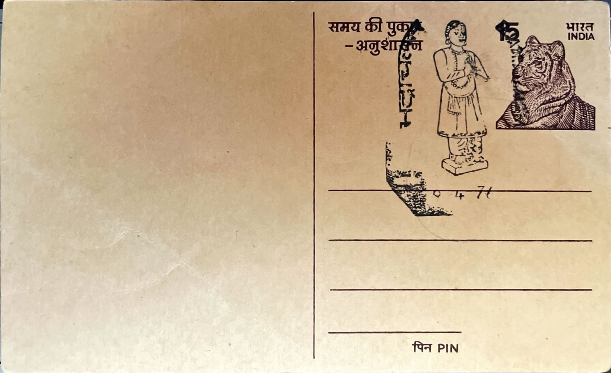

Bhakta Ramadasu
భక్త రామదాసు


The devotee remembered as Bhakta Ramadasu was born Kancharla Gopanna around 1620 in Nelakondapalli, a village in present-day Bhadradri Kothagudem district not far from Bhadrachalam itself, and was orphaned in his youth before rising through family connections to a position as a revenue official under the Qutb Shahi administration of Golconda. The title "Ramadasu," meaning servant of Rama, was not his birth name but an honorific attached to him after his devotional life and compositions became renowned, reflecting the Telugu Bhakti tradition's practice of naming poet-saints for the deity to whom their life's work was dedicated rather than for their given identity.
Within Telugu Bhakti literature and Carnatic music, Ramadasu occupies a place alongside figures such as Tyagaraja, Annamacharya, and Kshetrayya as one of the tradition's principal vaggeyakaras, composers who wrote both the lyrics and melody of their own songs. His significance rests on two intertwined legacies, as builder of one of Telangana's most visited Vaishnavite shrines and as author of a devotional corpus, including the Dasarathi Shatakamu, a cycle of roughly 108 verses addressed to Rama, that is still taught and performed as part of South Indian classical repertoire rather than treated merely as a historical curiosity.
Around 1674, while serving as revenue officer for the Bhadrachalam region, Gopanna undertook construction of the Sita Ramachandraswamy Temple on the banks of the Godavari, enlarging an earlier, more modest shrine associated with the hunter-devotee Bhadra after whom the town is named. The complex that resulted combines Dravidian and locally inflected architectural elements across several structures, including the sanctum, assembly mandapams, and a tall rajagopuram, and funding for the project was drawn from treasury revenues he was responsible for collecting on behalf of the Golconda sultanate, a decision that proved administratively unauthorized even as it produced the shrine that would become the region's principal pilgrimage center.
His use of government funds led to his arrest under Abul Hasan Qutb Shah, the last sultan of Golconda, known as Tana Shah, and to an imprisonment in Golconda fort that tradition and most accounts place at roughly twelve to fourteen years. It was during this confinement that Gopanna is held to have composed many of his most affecting kirtanas, songs framed as direct, often anguished conversations with Rama, and the episode credited with his release, in which Rama and Lakshmana are said to have appeared before the sultan to repay the disputed sum in gold coin, remains the best-known legend attached to his name and is retold in temple lore and popular retellings of the Bhadrachalam story to this day.
The temple he built continues to function as an active Vaishnavite pilgrimage site administered under the Telangana state endowments department, drawing its largest crowds each year for the Sita Rama Kalyanam held on Rama Navami, when the state's chief secretary and other officials take part in rituals reenacting the divine wedding before thousands of devotees; in 2024 the state government also laid the foundation for a temple expansion project valued at several hundred crore rupees. Ramadasu's kirtanas, meanwhile, are preserved and taught through Carnatic music institutions across South India, so that the same compositions once sung from a prison cell now form part of the standard training repertoire for students of the tradition.
| Date of Introduction | April 9, 1976 |
|---|---|
| Address | Senior Postmaster, |
| Bhadrachalam HO, | |
| Bhadradri Kothagudem (dt.), Telangana - 507111. |